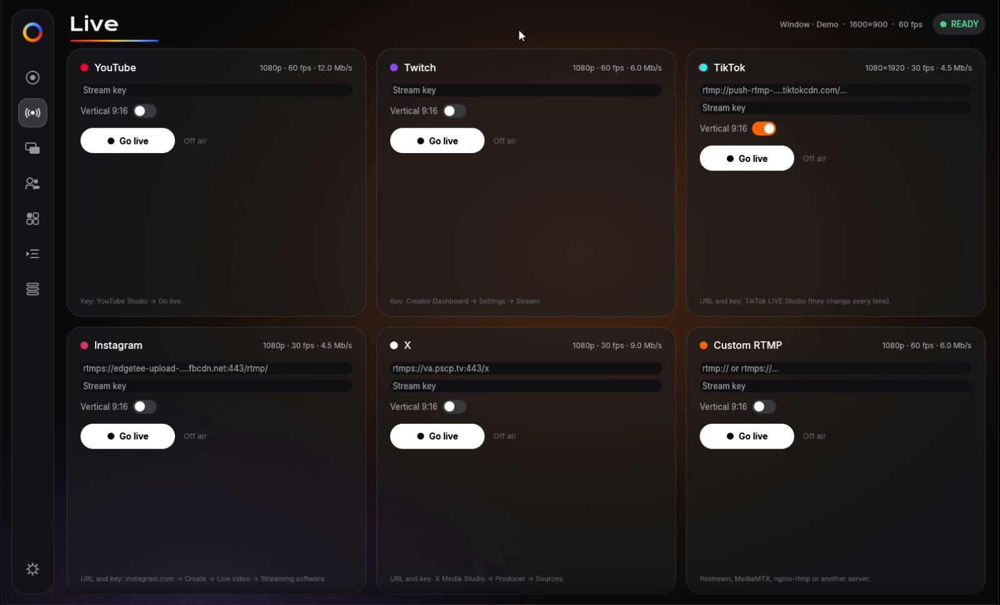
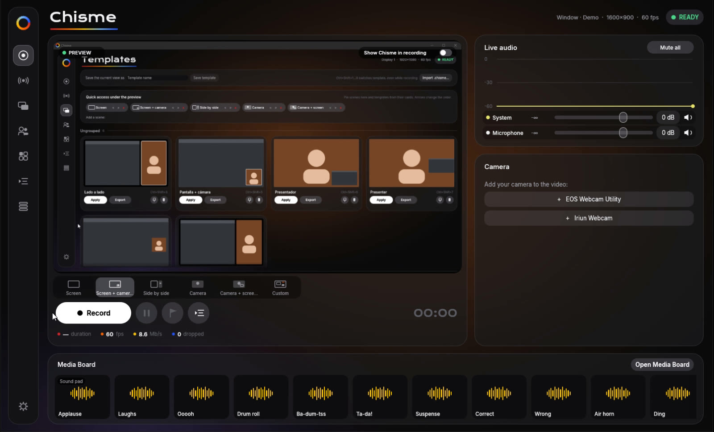
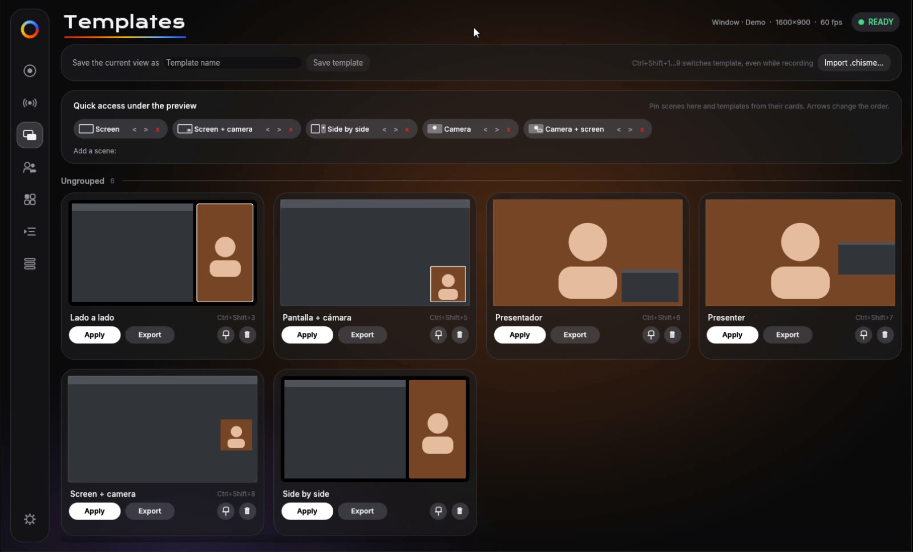
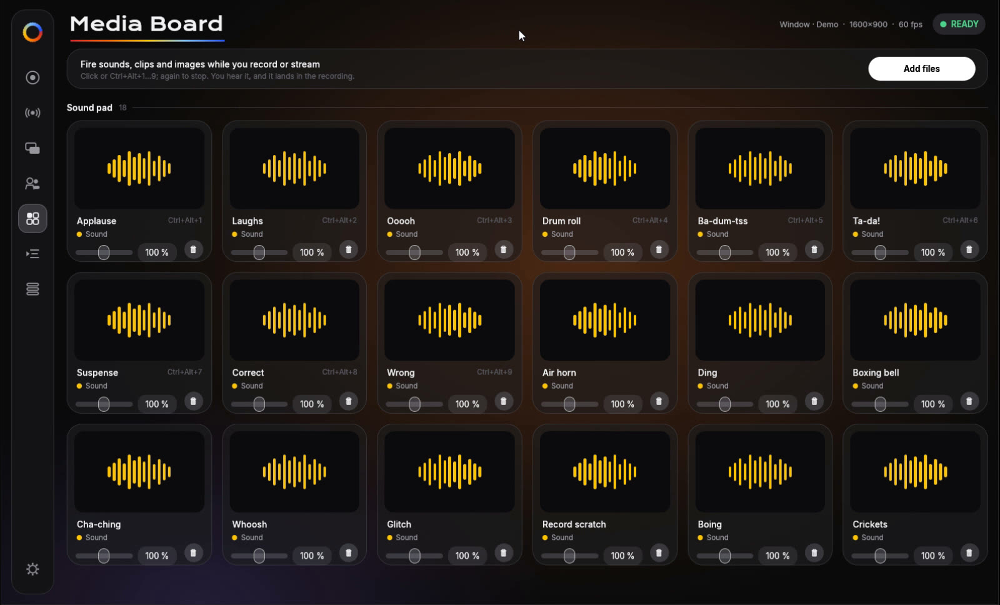
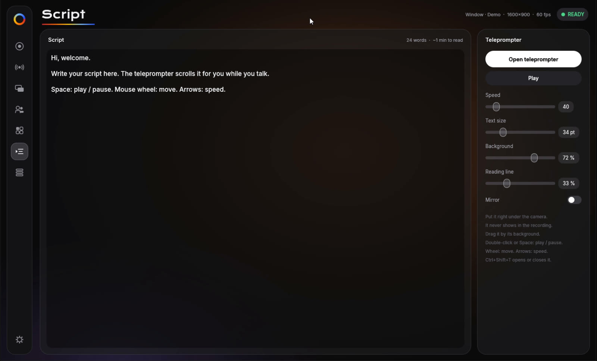
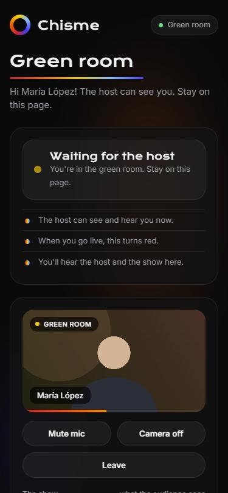

Multistream
Turn on as many destinations as you want. Each one reconnects on its own if the network drops, and keys stay in Windows Credential Manager.

A free studio for Windows. Record your screen and camera, and go live on YouTube, Twitch, TikTok, Instagram and X at the same time.

Chisme is the whole show in one window: scenes, camera, sounds, guests, a teleprompter and subtitles. Each platform gets its own encode, so TikTok goes out vertical while YouTube stays 1080p60.
Turn on as many destinations as you want. Each one reconnects on its own if the network drops, and keys stay in Windows Credential Manager.

TikTok and Instagram get an exact 1080×1920 crop at 30 fps from the same scene. No second app, no second scene.
Screen, camera, side by side, interview, panel… Build your own with layers, pin favorites, and switch with Ctrl+Shift+1…9, even mid-recording.

18 studio sound effects included: applause, drum roll, air horn, ba-dum-tss… Add your own clips and images and fire them with a click or a hotkey.

Whisper runs on your PC and writes an .srt next to every recording. The audio never leaves your computer.
A floating script under your camera that never shows up in the recording. Space to play, arrows for speed.

Keeps the last 15 to 300 seconds in memory. Something great happened? Ctrl+Shift+S saves it, and Chisme can make a vertical copy.
Hardware H.264 on NVIDIA, AMD or Intel; the GPU composes every scene; audio is mixed with noise removal (RNNoise) and saved as separate tracks too. Markers become chapters, and Chisme hides itself from your own recordings.
No plugins, no scene graph to learn, no account. Install it, paste your keys once, and press the big button.
One installer for Windows 10 and 11. It starts in English or Spanish.
Screen, camera, guests or your own layout. Add your logo and colors once.
Paste each platform's key and go live everywhere, or just record a file.
Send a link. Your guest opens it in the browser, nothing to install, and waits in the green room until you bring them on.

Yes. No watermark, no time limits, no account. Guests use your own LiveKit Cloud project, and its free tier covers about 80 hours of guest time a month.
Windows 10 or 11. A recent NVIDIA, AMD or Intel graphics chip is used for hardware encoding, so recording and streaming barely touch the CPU.
Yes. Turn on as many destinations as you want; each gets its own encode, so TikTok and Instagram go out vertical while YouTube, Twitch and X stay landscape.
Open the Guests page, click "Copy invite link" and send it. The guest opens it in Chrome, Edge, Firefox or Safari, types a name, picks a camera and mic, and waits in the green room until you bring them on stage.
Into Windows Credential Manager, never into a settings file. Subtitles are made on your PC too: the audio never leaves your computer.
Not yet. Chisme is built on Windows' own capture and encoding, and a Mac version is on the list.
Download Chisme free and go live everywhere in minutes.
Download for Windows →